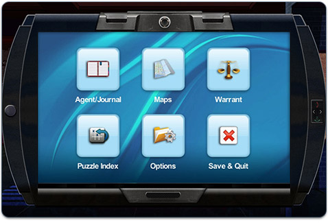

8 |
ACME Phone |
 |
|
Your ACME Phone is your most important piece of equipment.

Here are just some of the things you can do with your ACME Phone:
To open and close the ACME Phone menu, press
You can also close the ACME Phone by moving the cursor to the edge of the phone, or on the screen behind the phone, and pressing
But don’t forget, it’s still a phone. A few interesting people have your number, so answer the phone when it rings. You never know what you’ll find out!
When your ACME Phone rings, press
|
 |
 |
 |